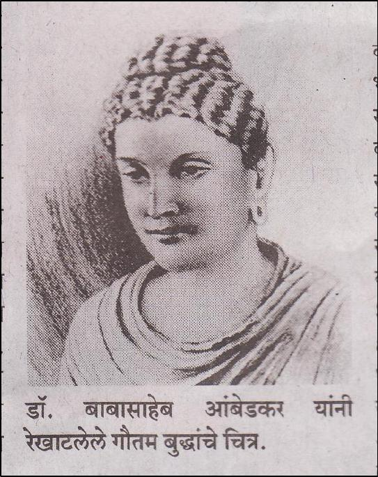

65
Painting of the Buddha by Babasaheb Ambedkar
This gives rise to the question: ‘which religion to convert to?’
Babasaheb, the rational man that he was, opted for Dhamma and not
religion. And the Dhamma that he chose was the Dhamma of the
Buddha, Buddhism. Buddhism helps an individual ascend to a greater
height from a spiritualist perspective and also to organise all the Dalit-
Bahujan-Adivasi from a societal perspective. Babasaheb avoided
religion, just as Buddha did, for one very important reason - that it
would go against Samma Ditthi (right view), an important element of